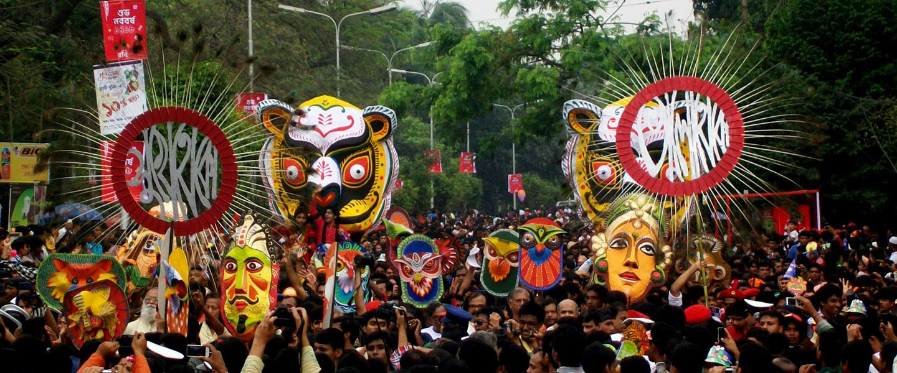
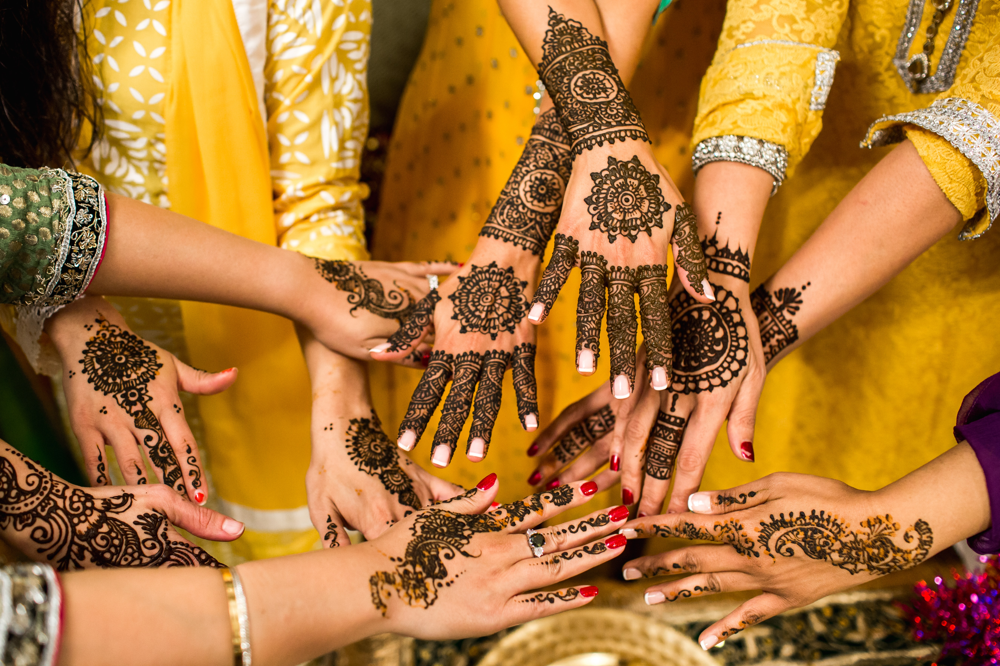
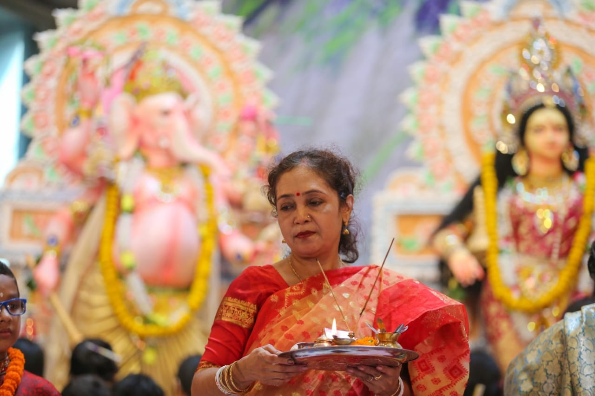

Introduction
Bangladesh has a rich, diverse culture. Its deeply rooted heritage is thoroughly reflected in its architecture, dance, literature, music, painting and clothing. The three primary religions of Bangladesh (Hinduism, Buddhism and Islam) have had a great influence on its culture and history.The people of Bangladesh have a rich fictional legacy, with the first available form of literature being over a thousand years old. Bengali literature developed considerably during the medieval period with the rise of popular poets such as Chandi Das, Daulat Kazi an Alaol.
The traditional music of Bangladesh is very much the same as that of the Indian sub-continent. The music in Bangladesh can be divided into three main categories: classical, modern and folk. Both vocal and instrumental classical music is enjoyed in Bangladesh. Ustad Ayet Ali Khan and Ustad Alauddin are two famous classical instrumental players that are internationally known. Modern music is becoming more popular and is practiced widely. Contemporary, pop songs and bands are also enjoying more widespread fame, but are mainly popular in the regions of Dhaka City.
Eid (Most Happiest Day for Muslims)
Eid-ul Fitr is one of the two main Muslim religious festivals in Bangladesh. Eid and fitr are Arabic words. Eid means festival and fitr means to open, to break fasting, and to go back to normal situation. Eid-ul Fitr is the day of joy on the 1st of the month of Shawwal, when people return to the normal routine of life after completing the siam (restraint) and fasting in the holy month of Ramadan. The month of Siam begins after the appearance of the new moon of the month of holy Ramadan and roza (fasting) closes on sighting the new moon of the next month of Shawwal. During this month Muslims keep anger, sex, senses and emotions, illusions and jealousy under restraint. For this reason, the word fitr is used in the sense of victory also. Bangladesh is place of racial harmony and people of different religions lives here with peace and harmony. Perhaps Bangladesh is the only country of the world where every religion's festival days are celebrated as government holidays. The government declares holiday for three days on the occasion. Educational institutions usually remain closed during this time. Different newspapers publish articles on the life and philosophy of Hazrat Muhammad (Sm), the significance of Eid, and the ideals of Islam. The radio and television broadcast special programmes.

One week before the Eid festival people start going to their respective hometowns and villages from Dhaka to to meet relatives and celebrate the festival together. Quiet remote villages become crowded. Everyone goes to meet each other in the village. The roads become overcrowded and as a result some accidents usually occur this time. Preparation of Eid starts long before the Eid. People go shopping for Eid dress. For men, Punjabi is the special dress for Eid. Women prefer to wear saree and Salwar-Kamiz. During Eid shopping, people purchase for themselves, and for family members and relatives as much as possible. Giving Eid present is a long tradition of Bangladesh. Nowadays exchange of Eid cards has come in vogue.
Eid-ul Fitr is celebrated in Bangladesh with great éclat. Bangladeshi observes the holiday by performing the obligatory Eid prayers on the morning of Eid, giving Zakat ul Fitr. Congregational prayers are held in all rural and urban places. In Dhaka, the Eid congregations are held at the national Eidgah, all major mosques including the Baitul Mukarram. The biggest congregation of the country is held at Sholakia in Kishoreganj, where about half a million people join the Eid prayer. Eid day starts in the very morning by men’s and kid’s taking shower and getting ready wearing new Punjabi, and go to the Eid-gah (a special place to do eid prayer). Muslims perform two rakats of Eid Namaz on the day whicj lasts for at least one hour. They exchange Salam and greetings by embracing one another irrespective of status or age. This is the sweetest moment of the eid. This hugging going on the whole day when meet someone new. Children purchase balloon and other toys from Eid-gah. They also visit the graves of the relatives and pious Muslims. Food and clothes are distributed to the poor. Popular customs also include ladies decorating one's hands with henna, dressing up in new clothes and having a good meal with family and friends.
Pohela Boisakh (New Year for Bengali)
Pahela Baishakh (Bengali: পহেলা বৈশাখ, romanized: Pohela Boishakh) or Bangla Noboborsho (Bengali: বাংলা নববর্ষ) is the first day of Bengali Calendar. It is celebrated on 14 April as a national holiday in Bangladesh, and on 14 or 15 April in the Indian states of West Bengal, Tripura and Northern Odisha and parts of Assam by people of Bengali heritage, irrespective of their religious faith. Celebration of Pahela Baishakh traces its roots during the Mughal rule in the region with the proclamation of tax collection reforms by Emperor Akbar. The festival date is set according to the lunisolar Bengali calendar as the first day of its first month Boishakh. It therefore almost always falls on or about 14 April every year on the Gregorian calendar. The same day is observed elsewhere as the traditional solar new year and a harvest festival, and is known by other names such as Vaisakhi in central and north India, Ugadi in South India Vishu in Kerala and Puthandu in Tamil Nadu. The festival is celebrated with processions, fairs and family time. The traditional greeting for Bengali New Year is শুভ নববর্ষ "Shubho Noboborsho" which is literally "Happy New Year". The festive Mangal Shobhajatra is organized in Bangladesh. In 2016, the UNESCO declared this festivity organized by the Faculty of Fine Arts, University of Dhaka as a cultural heritage of humanity.
The Bengali New Year is observed as a public holiday in Bangladesh. It is celebrated across religious boundaries by its Muslim majority and Hindu minority. According to Willem van Schendel and Henk Schulte Nordholt, the festival became a popular means of expressing cultural pride and heritage among the Bangladeshi as they resisted Pakistani rule in the 1950s and 1960s. The day is marked with singing, processions, and fairs. Traditionally, businesses start this day with a new ledger, clearing out the old. Singers perform traditional songs welcoming the new year. People enjoy classical jatra plays. People wear festive dress with women desking their hair with flowers. White-red color combinations are particularly popular. Bangladeshis prepare and enjoy a variety of traditional festive foods on Pohela Boishakh. These include panta bhat (watered rice), ilish bhaji (fried hilsa fish) and many special bhartas (pastes).
The celebrations start in Dhaka at dawn with a rendition of Rabindranath Tagore's song "Esho he Boishakh" by Chhayanaut under the banyan tree at Ramna (the Ramna Batamul). An integral part of the festivities is the Mangal Shobhajatra, a traditional colourful procession organised by the students of the Faculty of Fine Arts, University of Dhaka (Charukala). According to the history, the rudimentary step of Mangal Shobhjatra was started in Jessore by Charupith, a community organization, in 1985. Later in 1989 the Faculty of Fine Arts, University of Dhaka arranged this Mangal Shobhajatra with different motives and themes. Now, the Mangal Shobhajatra is celebrated by different organization in all over the country. The Dhaka University Mangal Shobhajatra tradition started in 1989 when students used the procession to overcome their frustration with the military rule. They organized the festival to create masks and floats with at least three theme, one highlighting evil, another courage, and a third about peace. It also highlighted the pride of Bangladeshi people for their folk heritage irrespective of religion, creed, caste, gender or age. In recent years, the procession has a different theme relevant to the country's culture and politics every year. Different cultural organizations and bands also perform on this occasion and fairs celebrating Bengali culture are organized throughout the country. Other traditional events held to celebrate Pohela Boishakh include bull racing in Munshiganj, wrestling in Chittagong, boat racing, cockfights, pigeon racing.
Weeding (Most Decorative Culture Of Bangladesh)
Bengali weddings are traditionally in five parts: first, it is the bride and groom's Mehendi Shondha (also called Pan Chini), the bride's Gaye Holud, the groom's Gaye Holud, the Biye, and the Bou Bhaat. These often take place on separate days. The first event in a wedding is an informal one: the groom presents the bride with a ring marking the "engagement" which is gaining popularity. For the mehendi shondha the bride's side apply henna to each other as well as the bride for the bride's Gaye Holud, the groom's family – except the groom himself – go in procession to the bride's home. Bride's friends and family apply turmeric paste to her body as a part of Gaye Hoof bride, and they are traditionally all in matching clothes, mostly orange. The bride is seated on a dais, and the henna is used to decorate the bride's hands and feet with elaborate abstract designs. The sweets are then fed to the bride by all involved, piece by piece. The actual wedding ceremony "Biye" follows the Gaye Holud ceremonies. The wedding ceremony is arranged by the bride's family. On the day, the younger members of the bride's family barricade the entrance to the venue and demand a sort of admission charge from the groom in return for allowing him to enter.
The bride and groom are seated separately, and a Kazi (authorized person by the govt. to perform the wedding), accompanied by the parents and a Wakil (witness) from each side formally asks the bride for her consent to the union, and then the groom for his. The bride's side of the family tries to play some kind of practical joke on the groom such as stealing the groom's shoe. The reception, also known as Bou-Bhaat (reception), is a party given by the groom's family in return for the wedding party. It is typically a much more relaxed affair, with only the second-best wedding outfit being worn. This is more or less the Musim wedding procession. The Hindu weddings also follow the same parts of the wedding but the wedding part is somewhat different. The wedding is done along with a feast and according to the Hindu religion's wedding steps, e.g. Shat-pake-badha; Shidur Daan etc. the wedding most likely lasts the whole night starting at the evening. The Christian and Buddhist Wedding follow a totally different Process. They more or less follow Western Culture and Methods. Sometimes they too follow the Bengali wedding procession.
Durga Puja (The Most Big Celebration For Hindu)
Durga Puja, the largest religious festival for Hindus, is celebrated widely across Bangladesh. Thousands of pandals (mandaps) are set up in various villages, towns, and cities. Durga Puja is a grand cultural celebration in the capital city of Dhaka. Major pujas of Dhaka are held in numerous pandals, but the biggest celebration takes place at Dhakeshwari Temple where several thousand devotees and onlookers stream through the premises for four days. Special boat race on Buriganga river is arranged and it attracts a large crowd. A five-day holiday is observed by all educational institutions, while Bijoya Dashami is a public holiday. On Bijoya Dashami, effigies are paraded through the streets of Shankhari Bazaar in Old Dhaka in loud, colorful processions before being immersed into the rivers. Thousands of Muslims take part in the secular part of festivities in celebration of Bengali solidarity and culture.
Durga Puja celebrates the victory of the goddess Durga over the demon king Mahishasura. It begins on the same day as Navratri, a nine-night festival celebrating the divine feminine.Durga Puja’s first day is Mahalaya, which heralds the advent of the goddess. Celebrations and worship begin on Sasthi, the sixth day. During the following three days, the goddess is worshipped in her various forms as Durga, Lakshmi, and Sarasvati. The celebrations end with Vijaya Dashami (“Tenth Day of Victory” ), when, amid loud chants and drumbeats, idols are carried in huge processions to local rivers, where they are immersed. That custom is symbolic of the departure of the deity to her home and to her husband, Shiva, in the Himalayas. Images of the goddess—astride a lion, attacking the demon king Mahishasura—are placed at various pandals (elaborately decorated bamboo structures and galleries) and temples.